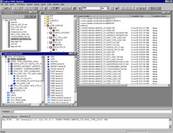
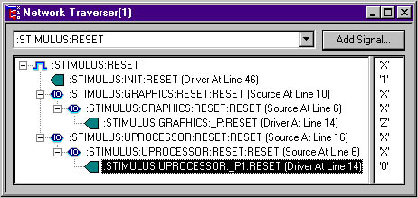
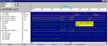

A Powerful Simulator That's Simply Easy to Use!
Finally a VHDL simulator that delivers the productivity required
of today's demanding designs:
- Direct Compile Technology for fast compilation & optimized
simulation
- High capacity for large designs
- Fastest RTL & behavioral performance
- Optimized VITAL for fast gate level verification
- Speedy design debugging with the Network Traverser and complete
debugging functionality
VeriBest VHDL Simulator proven performance for all design needs:
High Performance Simulation
VeriBest VHDL Simulator delivers an unrivaled combination of simulation
speed and capacity. Designers can race to market by achieving pre-synthesis
verification of their designs at speeds twice as fast or faster than competing
simulators. However, simulation speed does not matter if the simulator inefficiently
consumes memory. The larger the design, the more designers appreciate the
efficiency of the VeriBest VHDL Simulator.
Zoom (285K)
Direct Compilation Technology
Fast compilation times are the designer's first experience with the benefits
of VeriBest VHDL's direct compilation technology. The VeriBest VHDL compiler
translates VHDL source directly into optimized machine code instructions.
The Just-In-Time compiler performs globally static code optimizations as
it loads and tunes the code for the specific hardware platform. By combining
direct compilation technology with VeriBest VHDL's highly optimized engine,
designers experience leading edge simulation speed.
Optimized VITAL
The VeriBest VHDL simulator exploits the VITAL standard by performing
gate-level simulation optimizations. These optimizations propel a designer
out of synthesis and layout down the home stretch of post-layout design
verification to the finish line and time-to-market winner's circle.
Simply Easy to Use
Because VeriBest VHDL conforms to Microsoft Windows application standards,
designers find the user interface intuitive and easy to use. Intelligent
use of windows, menus and dialog boxes reduces the clutter and allows the
designer to focus on the important tasks such as managing the design project
files and libraries and debugging the design.
Productivity Through Debugging
Source level debugging flows naturally through an integrated text editor
supporting common editing features including modifying the source while
debugging. The designer can monitor the state of signals and variables in
the Watch Window. Support for breakpoints on source line, process instance
and signal event or edges, speed the debug cycle. Signal values can be set
and forced. A unique Network Traverser assists the designer in isolating
difficult problems such as multi-sourced signal contention. The Network
Traverser quickly identifies a signal's sources and drivers in the network
hierarchy. A double-click on any signal source or driver in the Network
Transverser activates an edit window with the text file at the location
of the signal, source or driver.
Customized Results Display
The designer selects the results data to save -- all, none or selectable
per instance or signal. Multiple waveform viewers are supported with designer
control over display characteristics such as radix and colors. Static and
dynamic time cursors are supported with a unique feature that shows which
transitions have multiple delta-time activity.

Productivity Through Integration
The VeriBest VHDL Simulator enhances designer productivity through tight
integration with other VeriBest solutions. VeriBest WaveBench, a graphical
stimulus editor, comes with VeriBest VHDL. The ASIC designer appreciates
the integration between VeriBest VHDL and VeriBest Origin, a separate ESDA
design capture and management product suite. The award winning VeriBest
FPGA Desktop solution for programmable logic includes the VeriBest VHDL
simulator.
Zoom (138K)
Product Configurations
VeriBest VHDL SysSim, in addition to all the powerful features of ChipSim,
provides support for foreign models such as SourceModels, SmartModels and
hardware modelers from Synopsys and "C" language models.
HARDWARE REQUIREMENTS
- Pentium or Pentium II processors
- Minimum 32MB RAM
- Recommended 64MB RAM
OS REQUIREMENTS
- Windows NT4.0 or Windows 95

Corporate Headquarters
Boulder, Colorado
1.888.482.3322
email: sales@veribest.com
http://www.veribest.com |
United Kingdom (44)1793.551.199
Germany (49) 89.96284.0
France (33) 1.41.76.35.00
Nordic (46) 8.92.54.00
Asia/Pacific (852) 2.893.3621
Japan (81) 3.5979.6331 |
Product names used are trademarks of the companies that own them.
© 1998 VeriBest® Incorporated Boulder, Colorado USA
Rev. 6/98
MKT003170
{kind=link}
{kind=link}